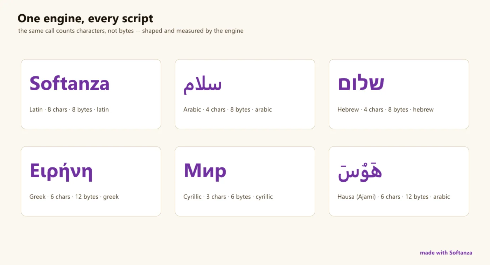

A string, in Softanza, is what a person reads: a sequence of characters, counted one by one, whatever the alphabet. The machine's bytes are a detail the engine keeps to itself.
That one decision runs through everything. NumberOfChars("héllo") answers 5, not 6. A position is counted from 1, the way people count, down to the compiled engine, so a whole family of off-by-one errors never exists. Hebrew, Arabic, Greek, emoji: no slice ever cuts a character in the middle, because there is no byte arithmetic for it to cut with.
Under the face sits one Zig engine, utf8proc for Unicode, PCRE2 for patterns, SheenBidi and HarfBuzz for the direction and the shaping of text. Above it, more than two thousand methods that say what they do: Find, Between, Sections, ReplaceMany, RemoveDiacritics, Words, Levenshtein. The vocabulary for finding what sits *between* two marks is wider than any general string library exposes; the similarity lane, with its seven distances over code points, is one that ICU, the reference for text, does not even enter.
Some rules were rethought from first principles, and each is a story the library tells elsewhere. The empty string is never counted, found or contained, not even in itself, because a match on nothing can silently delete a real character. Case sensitivity is one parameter of one function, FindCS(sub, FALSE), not a second twin function to learn. Three letters that look identical, Latin O, Greek Ο, Cyrillic О, stay distinct and detectable, because identity follows Unicode and not the eye.
What it is not, by choice, is ICU: there is no locale collation, no CLDR data, no legacy charset transcoding, and case folding is Unicode-correct but not locale-correct (the Turkish i). The Compass rates six of twelve lanes Strong and marks exactly that line as the one worth closing next; the page below keeps its words.

one word in six scripts, counted by the engine. rendered on 2026-10-01 at 04:00 by the site's render script tools/areas.ring, run inside the library at commit 0e72e2e2c · the source(opens in a new tab)
Where it stands
The Softanza Compass's reading: every lane of the area rated against the best of its category, by what the guards prove. Read from the source on 2026-09-16. The Compass's sentences are in English, as it wrote them.
A general string library ships convenience; ICU ships locale. Softanza's string is one Zig engine — utf8proc + PCRE2 + SheenBidi/HarfBuzz — behind a 2,212-method Haro face that is codepoint-correct end to end and reaches from core slicing through similarity, formatting and text analytics: a genuine superset of Python/Rust str. What it deliberately is not is ICU — no locale collation, no CLDR, no legacy charset transcoding — and the honest read below marks exactly that line.
The honesty line on the ratings. Softanza's string audit is narrated, not finished — roughly 245 of 999 blocks are block-by-block verified, and where a block is unaudited the guard cannot yet vouch for it. The lane ratings reflect what the ~2,377 committed assertions prove today; they will only harden as the audit closes.
The one-sentence position. On breadth and Unicode-correctness, Softanza's string is at or beyond any general-purpose str library — and it adds similarity, formatting and text-analytics lanes those libraries do not have. The one place it stands clearly behind category is ICU's locale layer: collation, CLDR, locale casing and legacy charsets — a boundary the library drew on purpose, and the one worth closing next.
What a crafter does with it, and what stands out
A genuine superset of Python/Rust str on breadth and Unicode-correctness
Between/sections finder vocabulary wider than any str library exposes
A similarity and distance lane that ICU does not even enter
Formatting and text-analytics lanes general str libraries do not have
What is owed
Locale-aware collation + CLDR foundation (ICU's crown jewel)
Finish the narration audit: ~736 of 999 blocks unproven
Grapheme-cluster cursor (UAX#29) and line-break (UAX#14) primitives
Rethought from first principles
What Softanza kept from what works, and what it rethought, as the library wrote it down in its design documents and narrations.
The Softanza wayA string is a sequence of characters a person reads, counted in Unicode code points, never in the bytes a machine stores.
Kept from the best practice
Case rules come from the Unicode standard through utf8proc, so case-insensitive search folds German ß to ss instead of using ASCII-only tricks. source(opens in a new tab)
Whitespace follows Unicode, which defines more than 25 space characters, so trimming also removes no-break and ideographic spaces. source(opens in a new tab)
Identity follows Unicode: two characters are equal only when their code points match, so look-alike Latin, Greek and Cyrillic letters stay distinct and detectable. source(opens in a new tab)
Rethought
Every position and length counts code points, not bytes, so text in Hebrew, Arabic or emoji is never cut through the middle of a character. source(opens in a new tab)
Positions start at 1, as people count, at every layer including the compiled engine, which removes a whole class of off-by-one errors. source(opens in a new tab)
The empty string is never counted, found, contained, replaced or removed, because a match on nothing can silently delete a real character. source(opens in a new tab)
Case sensitivity is one parameter of a single function, not a second twin function, which halves the number of functions to learn. source(opens in a new tab)
The Softanza way, run
What Softanza does differently in this area, shown by code taken from its narrations and guards, and run for this page.
The empty string is never contained, not even in itself, so a match on nothing can never trigger an edit.
For every lane: what runs in the engine today, the tools it is fair to measure it against, and what is still owed.
01Unicode-correct core opsStrong
In the engine
Length, slice, index, insert, reverse — all codepoint-correct through _EngineSlice / _EngineCount / str_mid_cp over utf8proc. Byte and codepoint are kept cleanly apart (SizeInBytes vs NumberOfChars), and grapheme count ships. Guarded at multi-million codepoints.
Measured against
ICURust str + unicode-segmentationPython str
To complete
A first-class extended grapheme-cluster iterator (UAX#29) beyond the count, so user-perceived characters are a native cursor, not a derived number.
02Search · find · between · sectionsStrong
In the engine
The full finder family — Find, FindCS, FindFirst/Last/Nth, FindAll, Between, FindBetweenAsSections — over str_find_* and str_between_*. The between/sections vocabulary is a genuine superset of what str libraries expose, and it returns all matches past 65,536 (guarded).
Measured against
ICUPython str.find / reRust str
To complete
Contract questions still open in the guards: FindAnyBoundedBy return shape (positions vs substrings), and Section strict-raise vs clamp on out-of-range.
03Replace · remove · editStrong
In the engine
Codepoint-safe editing across replace.zig (70 KB): Replace[CS], ReplaceMany[ByMany], ReplaceOccurrencesByMany, positional and range replace, the *_between edit set, and InsertBefore/AfterEachNChars. Replaces Haro's byte-oriented substr entirely.
Measured against
ICUPython str.replace / re.subRust str
To complete
Nothing structural — the vocabulary is wider than the peers'. The one sharp edge is documented, not owed: ReplaceCS mutates its handle in place.
04Segmentation & tokenizationStrong
In the engine
A dedicated word_break.zig (UAX#29) drives Words, plus sentence and line splitting, streaming tokenizers (stzWordStream, stzTextStream), and char/word n-grams with frequency. Split is one-pass linear (was O(n²), now guarded).
UAX#14 line-break opportunities as an engine primitive (line wrapping is width-based today); locale-tailored word rules for Thai/Khmer/CJK where UAX#29 needs a dictionary.
05NormalizationStrong
In the engine
Full NF-form normalization through utf8proc (str_normalize), plus mark stripping (RemoveDiacritics / str_strip_marks), space collapsing and Simplify. Category parity for the canonical / compatibility forms.
Surface all four NF forms (NFC/NFD/NFKC/NFKD) as explicitly named entry points, and a normalization-quick-check fast path for the already-normalized common case.
06Similarity & distanceStrong
In the engine
A rich metric set in fuzzy.zig / compare.zig, all over codepoints: levenshtein, hamming, jaro, jarowinkler, jaccard, cosine, longest common prefix/suffix, anagram and char-diff — a lane ICU does not even enter.
Measured against
RapidFuzzPython difflibstrsim (Rust)
To complete
Damerau-Levenshtein (transpositions) and a token-set / partial-ratio scorer for the fuzzy-matching use case RapidFuzz is built around.
07Case · script · direction · language detectionSolid
In the engine
Default Unicode case (upper/lower/title/fold via utf8proc) plus a detection suite peers usually farm out: detectScript, detectLanguage, detectDirection, per-script counters and bidi-direction numbers.
Locale-tailored casing — Turkish dotless-i, Greek final sigma, Lithuanian — needs the locale foundation (lane 12). Case is Unicode-default-correct but not locale-correct.
08Formatting · padding · alignment · boxingSolid
In the engine
The largest submodule (format.zig, 75 KB): codepoint-width pad/justify/center, wrap, truncate, indent/dedent, expandtabs, mask/maskemail, numberlines, quote/surround and box drawing.
Measured against
Python str.format / textwrapRust std::fmtfmtlib
To complete
Box drawing emits ASCII + - |, not the Unicode ┌─┐ glyphs (open cluster); and caller-scope Interpolate / $() is blocked by a Haro-language limit, not a string one.
09Pattern · regex · fuzzySolid
In the engine
Real PCRE2 under regex.zig — match/count/find-all/replace/split, Unicode-capable — plus a declarative W-conditional DSL (28 *W methods) lowered through the expression engine, and fuzzy edit-clustering.
Measured against
PCRE2RE2Python reRust regex
To complete
The deep regex story — named captures ergonomics, RE2-style linear-time guarantees, compiled-pattern reuse — is rated on its own Regex page; here it is a solid embedded lane.
10Text analytics (NLP)Solid
In the engine
A large data-backed surface str libraries never attempt: VADER sentiment, NER, POS, lemma (en/fr/ar), stem, WordNet synonyms/hypernyms, TextRank/TF-IDF keywords, summarize, readability, stopwords.
Measured against
spaCyNLTKStanza
To complete
Dictionary/statistical grade and largely English-centred; neural, multilingual parsing is the NLP & linguistics group's page. Rated Solid as a bonus lane, not against spaCy's models.
11Encoding · charset · cryptoPartial
In the engine
encode.zig covers url/html escaping, base64, hex, binary, run-length and CSV fields; the crypto surface adds md5, sha256, blake3, hmacsha256, xor, and classical ciphers (caesar/vigenere/atbash).
Legacy charset transcoding — Shift-JIS, GBK, ISO-8859-*, Windows-125x — is absent; the world is assumed UTF-8. Classical ciphers are for teaching, not security. Charset conversion is ICU's, and it is the real gap here.
12Locale-tailored ops & collationEmerging
In the engine
Locale lives Haro-side as tables (stzLocale, stzCountry, stzLanguage, stzScript); the engine locale.zig is ten C-locale stubs. Native day names stop at ten languages.
Measured against
ICU / CLDRBoost.Locale
To complete
Locale-aware collation — ICU's crown jewel — is missing entirely, along with CLDR data and locale sorting. The plan owns this: "scoped, not started," and the choice was deliberately not to embed ICU.
What is owed, in the order of return
The gaps, ordered by what they bring and not by their size; value is the effect on the library's reach, effort an engineer's reading.
Tier A — foundational, unblocks several lanes
Locale-aware collation + CLDR foundation
A collation engine and a CLDR data subset. This one addition unblocks locale sorting, locale-tailored casing (lane 7), and locale number/date formatting across the library — the single line that separates a strong str library from ICU. The plan already scopes it as phase L0.
Value · highEffort · high
Finish the narration audit
Ratings on this page rest on ~2,377 narrated assertions — but the block-by-block audit has reached ~245 of 999, so roughly 736 blocks remain unproven. Every rating above is "proven where narrated"; closing the audit is what turns intent into fact across the whole face.
Value · highEffort · medium
Tier B — cheap and high-leverage
Unicode box-drawing glyphs
Emit ┌─┐ instead of ASCII + - | in the box/boxify family — a mojibake fix on an existing, otherwise-solid formatter. Every boxed figure improves at once.
Value · lowEffort · low
Close the open contract questions
Duplicates() chars-vs-substrings, FindAnyBoundedBy return shape, and Section raise-vs-clamp are undecided in the guards. Each is a one-line semantics call that unblocks its test block.
Value · mediumEffort · low
Damerau-Levenshtein + fuzzy scorers
Add transposition distance and a token-set / partial-ratio scorer over the existing metric set, matching the fuzzy-match ergonomics RapidFuzz is used for. Small next to the code that already ships.
Value · mediumEffort · low
Tier C — strategic, larger
Legacy charset transcoding
An iconv-style layer for Shift-JIS, GBK, ISO-8859-* and Windows-125x. Needed the moment Softanza reads text it did not write; today the world is assumed UTF-8.
Value · mediumEffort · medium
Grapheme & line-break primitives
An extended grapheme-cluster cursor (UAX#29) and line-break opportunities (UAX#14) as engine primitives — the two boundary kinds the segmentation lane still derives rather than iterates.
Value · mediumEffort · medium
A string-specific perf audit
The residency wins measured so far were list-specific; the handoff flags that string's own engine paths still need their own profiling pass. The substring-enumeration family is Θ(n²) by design and only stressed to L=1000.
Value · mediumEffort · medium
The design, as the library wrote it (2)
The design documents of this area, read in the repository at commit 4a184e6f0: what each one is, its outline, and the link to the whole text.
String Engine v2 -- Design Document & Implementation Plan
835 lines · 17 sections · written on 2026-05-17
A design document and eight-phase implementation plan for the Zig string engine, approved but not yet implemented: a str_ prefix, 1-based indexing, Unicode-correct case folding, error unions instead of silent catches, then regex, locale and NLP primitives.
283 lines · 5 sections · written on 2026-05-15, revised on 2026-05-18
A decomposition map proposing to split the 15,887-method stzString class into nine subclasses (finder, splitter, replacer, bounder, formatter, visualizer, walker, checker and a root) by composition over one shared engine handle, with a five-phase migration strategy.
The narrations the library wrote about this area, each run block by block before it was published here.
InsertSubstrings(): A Powerful String Manipulation Tool in Softanza2024 · feature essayDevelopers often face the challenge of inserting a list of formatted substrings into existing text. Softanza, a foundation library for Haro programming language, offers a powerful solution to this problem with its InsertSubstrings() feature.
Softanza: Simplifying the Power of C++ Backends for Unicode Handling2024 · comparisonIn programming in general, there's often a trade-off between power and simplicity. Softanza, a library for the Haro programming language, aims to bridge this gap by leveraging robust native backends while providing developers with a unified, accessible inte...
An overview of String Art support in Softanza2024 · feature essaySoftanza library for Haro language introduces string art texts and paintings, enhancing the programming experience in code narrations, educational examples, and console text-based games.
Visual Sequence Finding in Softanza2024 · feature essaySoftanza transforms string sequence finding in Haro language from a basic search operation into a visually rich experience. Let's explore its features through practical examples.
Five Practical Applications on Strings of the / Operator in Softanza2024 · feature essayThe Softanza library for the Haro programming language introduces a groundbreaking set of features centered around the / operator, transforming the way strings (and lists) are manipulated.
Emptiness in Strings, Clear Rules: The Softanza Way2024 · feature essayIn programming, emptiness—represented as the empty string ""—is often mishandled, leading to unexpected results, bugs, and inconsistencies.
Simplifying Orientation in String Removal with Softanza2024 · feature essayIn text manipulation, removing a substring from the left or right of a string is a common task, but it can quickly become tricky when handling languages with different orientations, such as Arabic.
Mastering Precision with the Sit() Function2024 · tutorialThe Sit() function stands out as a surgical tool for precision string manipulation. Whether you’re designing advanced text editors, processing linguistic data, or debugging complex parsers, Sit() adapts to your needs with unparalleled flexibility.
Unmasking Unicode Lookalikes2024 · feature essayThe world of Unicode characters is vast, and sometimes tricky, especially when visually similar characters are actually different. Let's explore this with examples and see how Softanza offers a solution.
The classes of this area (45)
Each class leads to its reference page: its methods, each with an example run.